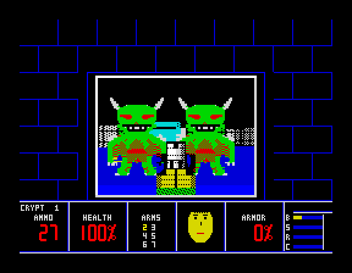

Imp Doom III
The newest game: every level is generated, the imps are green, and you can save and come back.
Runs in your browser on an emulated Timex Sinclair 2068. Not affiliated with id Software or Bethesda.

The newest game: every level is generated, the imps are green, and you can save and come back.
Runs in your browser on an emulated Timex Sinclair 2068. Not affiliated with id Software or Bethesda.
(All three side by side.) Compared with the other two games:
Final. Imp Doom III is the finished build of the series.



The tune of Imp Doom III (C phrygian: one 51 second pass and the start of the repeat), exported from the project’s model of the TS2068 sound chip.
| Action | Keys | Gamepad |
|---|---|---|
| Forward / back | Q / A, or cursor up / down | up / down |
| Turn left / right | O / P, or cursor left / right | left / right |
| Strafe left / right | Z / X | - |
| Fire | SPACE | fire button |
| Use (open the locked door, once you have the key) | E or ENTER | - |
| Start, restart, continue (title, death and win screens) | SPACE or ENTER | fire button |
| Save the game | K (while playing) | - |
| Load the saved game | L (while playing, and also on the title and the death and win screens) | - |
Keys can be combined (walk and turn, strafe and fire). Click the picture first so it gets the keyboard; the sound starts on the first click or key. A connected gamepad is read as joystick 1.
Play Imp Doom III Download the cartridge (.dck)
The .dck file is a DOCK cartridge image for the TS2068; emulators that take dock cartridges can load it.